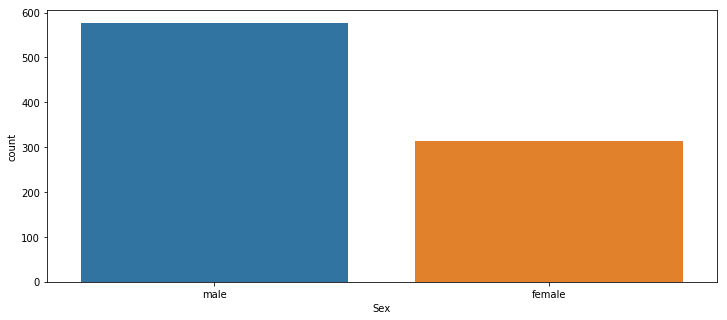

In this project we use Titanic Data Set from Kaggle, to see how to analysis data and deal with missing data.
The features include Name, Sex, Age, SibSp(number of sibling or husband), Our prediction target is a classification problem: whether the people ‘suvival or deceased’.
After data analysis and data cleaning, we will use a logistic model later for the classification.
Finally, we evaluate the resulting model and see the performance.
Data Analysis and Data Cleaning
import pandas as pd |
train = pd.read_csv('titanic_train.csv') |
| PassengerId | Survived | Pclass | Name | Sex | Age | SibSp | Parch | Ticket | Fare | Cabin | Embarked | |
|---|---|---|---|---|---|---|---|---|---|---|---|---|
| 0 | 1 | 0 | 3 | Braund, Mr. Owen Harris | male | 22.0 | 1 | 0 | A/5 21171 | 7.2500 | NaN | S |
| 1 | 2 | 1 | 1 | Cumings, Mrs. John Bradley (Florence Briggs Th... | female | 38.0 | 1 | 0 | PC 17599 | 71.2833 | C85 | C |
| 2 | 3 | 1 | 3 | Heikkinen, Miss. Laina | female | 26.0 | 0 | 0 | STON/O2. 3101282 | 7.9250 | NaN | S |
| 3 | 4 | 1 | 1 | Futrelle, Mrs. Jacques Heath (Lily May Peel) | female | 35.0 | 1 | 0 | 113803 | 53.1000 | C123 | S |
| 4 | 5 | 0 | 3 | Allen, Mr. William Henry | male | 35.0 | 0 | 0 | 373450 | 8.0500 | NaN | S |
Analysis Data
1. Relationship of Survived with Sex
In movie of Titanic, the people in disater let woman escape first. So we will start from examine the relationship between ‘Survived’ and ‘Sex’.
plt.figure(figsize=(12, 5)) |
<matplotlib.axes._subplots.AxesSubplot at 0x189f212e908>
plt.figure(figsize=(12, 5)) |
<matplotlib.axes._subplots.AxesSubplot at 0x189f212e748>Result: for all people, the number of female is about half of male, but the survival rate of female is about 3 times than male. This might be caused by the fact that the people in Titanic let female escape first.
2. Relationship of Survived with Pclass
A reasonable guess is that they also let people in better class go first.
plt.figure(figsize=(12, 5)) |
<matplotlib.axes._subplots.AxesSubplot at 0x189f203abe0>
Result: the 3rd class has much more people than other classes, but most of them died. This confirms our guess that people in higher class have more probability to survive.
The survival rate would be: people in 1st class > people in 2nd class >> people in 3rd class.
3. Relationship of Survived with Embarked
plt.figure(figsize=(12, 5)) |
<matplotlib.axes._subplots.AxesSubplot at 0x189f3c0c668>Result: the result shows that more people depart from S port, but the survial rate of people depart from S port is much lower than people depart from C port. But why?
To found this, I guess maybe the depart port is related to the class people taken:
plt.figure(figsize=(12, 5)) |
<matplotlib.axes._subplots.AxesSubplot at 0x189f1ead940>Bingo! Most of people in 3rd class depart from S port. And because 3rd class people have much lower survial rate, most people depart from S port died.
4. Relationship of Survived with Age
g = sns.FacetGrid(train, col="Survived", size = 5) |
Result: most people of 20-30 died. That might because 1. they let child to escape first. 2. there are many ‘Jack’s: male around 20-30 want to try the newest and largest ship, but they don’t have much money, so they bought a ticket of 3rd class.
The first idea had been examine by the fact that people around 0-20 have higher survival rate. So we only have to check the second idea:
g = sns.FacetGrid(train, col="Pclass", row="Sex", size = 5) |
Conclusion
- Survival <=> Sex: female’s survival rate is 3 times than male’s.
- Survival <=> PClass: people in 3rd class died most. The survival rate is 1st class > 2nd class >> 3rd class.
- Survival <=> Depart: most 3rd class passengers were departd from S port, causing people depart from S port died most.
- Survival <=> Age: most people of 20-30 died. It’s related to the fact that most 20-30 people bought the 3rd class ticket.
Missing Data
Use Seabon’s heatmap to check missing data quickly.
plt.figure(figsize=(12, 5)) |
<matplotlib.axes._subplots.AxesSubplot at 0x189e90dd390>Count Number of Missing data:
## count number of missing rows: |
0.19865319865319866For ‘Age’ column, 20% of data is missing = small lossing rate for reasonable replacement with some form of imputation.
For ‘Cabin’ column, we missed too much data = probably drop this later, or change it to another feature like “Cabin Known: 1 or 0”
Fill in the Age Data
To fill in data, we need to know the relationship of ‘age’ with other features.
So we need to check data and find what is ‘age’ related to.
As we showed in previous section, most 3rd class people were around 20-30. Therefore we will start from this point.
plt.figure(figsize=(12, 5)) |
<matplotlib.axes._subplots.AxesSubplot at 0x189f4174160>Maybe age effects the PClass (becasue older people has more money?), so we have:
plt.figure(figsize=(12, 7)) |
<matplotlib.axes._subplots.AxesSubplot at 0x189f407a550>Therefore, we can use the average age for each ‘Pclass’ to fill in the missing ‘age’ data:
def fillin_age(col): |
train['Age'] = train[['Age','Pclass']].apply(fillin_age,axis=1) |
By the fillin_age function, we can fillin the age data. Let us check the fillin result by the heatmap:
plt.figure(figsize=(12, 5)) |
<matplotlib.axes._subplots.AxesSubplot at 0x189f3f53080>The benefit of the average age method, is our trend between Pclass and age doesn’t changed:
plt.figure(figsize=(12, 4)) |
<matplotlib.axes._subplots.AxesSubplot at 0x189f1f652e8>And the price of fillin, is that we have different age distribution in our data set. (compare to the original age distribution which would not be real too because of the NaN rows)
plt.figure(figsize=(12, 5)) |
<matplotlib.axes._subplots.AxesSubplot at 0x189e8d12c50>Drop the Cabin Column
train.drop('Cabin',axis=1,inplace=True) |
| PassengerId | Survived | Pclass | Name | Sex | Age | SibSp | Parch | Ticket | Fare | Embarked | |
|---|---|---|---|---|---|---|---|---|---|---|---|
| 0 | 1 | 0 | 3 | Braund, Mr. Owen Harris | male | 22.0 | 1 | 0 | A/5 21171 | 7.2500 | S |
| 1 | 2 | 1 | 1 | Cumings, Mrs. John Bradley (Florence Briggs Th... | female | 38.0 | 1 | 0 | PC 17599 | 71.2833 | C |
| 2 | 3 | 1 | 3 | Heikkinen, Miss. Laina | female | 26.0 | 0 | 0 | STON/O2. 3101282 | 7.9250 | S |
| 3 | 4 | 1 | 1 | Futrelle, Mrs. Jacques Heath (Lily May Peel) | female | 35.0 | 1 | 0 | 113803 | 53.1000 | S |
| 4 | 5 | 0 | 3 | Allen, Mr. William Henry | male | 35.0 | 0 | 0 | 373450 | 8.0500 | S |
Convert Categorical Features
train.info() |
<class 'pandas.core.frame.DataFrame'>
RangeIndex: 891 entries, 0 to 890
Data columns (total 11 columns):
PassengerId 891 non-null int64
Survived 891 non-null int64
Pclass 891 non-null int64
Name 891 non-null object
Sex 891 non-null object
Age 891 non-null float64
SibSp 891 non-null int64
Parch 891 non-null int64
Ticket 891 non-null object
Fare 891 non-null float64
Embarked 889 non-null object
dtypes: float64(2), int64(5), object(4)
memory usage: 76.6+ KBBy the train.info(), we can know the categorical features are Object : ‘Name’, ‘Sex’, ‘Ticket’, ‘Embarked’
Because our prediction target is ‘suvival or deceased’, and Name and Ticket is relevant for this topic, so we’re going to:
- Add dummy data for ‘Sex’ and ‘Embarked’
- Drop the ‘Name’ and ‘Ticket’ Column
# Get dummy for sex and embarked |
train.head() |
| PassengerId | Survived | Pclass | Age | SibSp | Parch | Fare | male | Q | S | |
|---|---|---|---|---|---|---|---|---|---|---|
| 0 | 1 | 0 | 3 | 22.0 | 1 | 0 | 7.2500 | 1 | 0 | 1 |
| 1 | 2 | 1 | 1 | 38.0 | 1 | 0 | 71.2833 | 0 | 0 | 0 |
| 2 | 3 | 1 | 3 | 26.0 | 0 | 0 | 7.9250 | 0 | 0 | 1 |
| 3 | 4 | 1 | 1 | 35.0 | 1 | 0 | 53.1000 | 0 | 0 | 1 |
| 4 | 5 | 0 | 3 | 35.0 | 0 | 0 | 8.0500 | 1 | 0 | 1 |
train.to_csv('titanic_train_cleaned.csv', index = False) |
Logistic Regression
train = pd.read_csv('titanic_train_cleaned.csv') |
| PassengerId | Survived | Pclass | Age | SibSp | Parch | Fare | male | Q | S | |
|---|---|---|---|---|---|---|---|---|---|---|
| 0 | 1 | 0 | 3 | 22.0 | 1 | 0 | 7.2500 | 1 | 0 | 1 |
| 1 | 2 | 1 | 1 | 38.0 | 1 | 0 | 71.2833 | 0 | 0 | 0 |
| 2 | 3 | 1 | 3 | 26.0 | 0 | 0 | 7.9250 | 0 | 0 | 1 |
| 3 | 4 | 1 | 1 | 35.0 | 1 | 0 | 53.1000 | 0 | 0 | 1 |
| 4 | 5 | 0 | 3 | 35.0 | 0 | 0 | 8.0500 | 1 | 0 | 1 |
Split Train / Test Data
from sklearn.model_selection import train_test_split |
Training
from sklearn.linear_model import LogisticRegression |
LogisticRegression(C=1.0, class_weight=None, dual=False, fit_intercept=True,
intercept_scaling=1, max_iter=100, multi_class='ovr', n_jobs=1,
penalty='l2', random_state=None, solver='liblinear', tol=0.0001,
verbose=0, warm_start=False)Prediction and Evaluation
pred = logReg.predict(X_test) |
array([1, 0, 0, 0, 0, 0, 0, 0, 0, 0, 0, 0, 0, 1, 0, 0, 0, 0, 0, 0, 0, 1,
1, 1, 1, 1, 0, 0, 1, 0, 0, 0, 1, 0, 0, 0, 0, 0, 0, 0, 1, 0, 0, 0,
0, 1, 0, 1, 1, 0, 1, 0, 0, 0, 0, 1, 0, 0, 0, 0, 0, 0, 1, 0, 1, 1,
0, 0, 0, 0, 0, 0, 0, 1, 1, 0, 0, 1, 1, 1, 0, 0, 1, 0, 0, 1, 0, 1,
1, 0], dtype=int64)- By Mean Absolute Error (MAE)
np.average(np.abs(pred - y_test)) |
0.2111111111111111- By Class Report
from sklearn.metrics import classification_report |
precision recall f1-score support
0 0.81 0.88 0.84 58
1 0.74 0.62 0.68 32
avg / total 0.79 0.79 0.78 90Conclusion
In this expriment, we use Titanic Data Set from Kaggle dataset. After cleaning the dataset, we use logistic regression to fit the data. However, the evaluation result turns out that the logistic regression’s mean absolute error is 0.21, which means the logistic regression didn’t fit the sample very well. So the todo is to explore more model suitable for this problem.